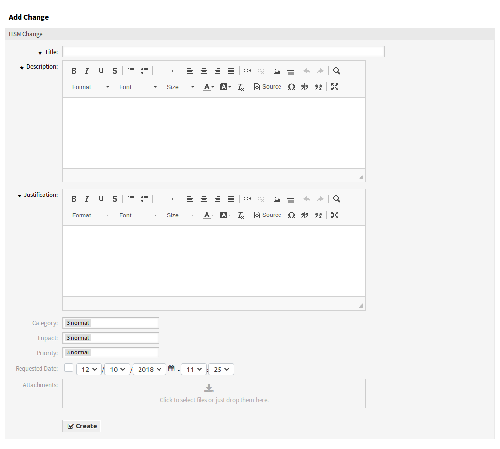

New¶
Use this screen to add new changes to the change management.

Add Change Screen
The following settings are available when adding or editing this resource. The fields marked with an asterisk are mandatory.
- Title *
- The name of this resource. Any type of characters can be entered to this field including uppercase letters and spaces. The name will be displayed in the overview table.
- Description *
- Longer text description of the change.
- Justification *
- Text explanation of the reasons behind the change. Answer to the question: What is the likely consequence if the change is not implemented?
- Category *
- Defines the type of change.
- Impact *
- Defines the effects or impact the change will have.
- Priority *
Defines the priority of the change from the selected Category and Impact.
See also
See the Category ↔ Impact ↔ Priority matrix to define the priority.
- Requested Date
Select a date when a customer requested the change.
See also
This attribute can be deactivated in system configuration under
Frontend→Agent→View.- Attachments
- Enables related files and documents to be attached.